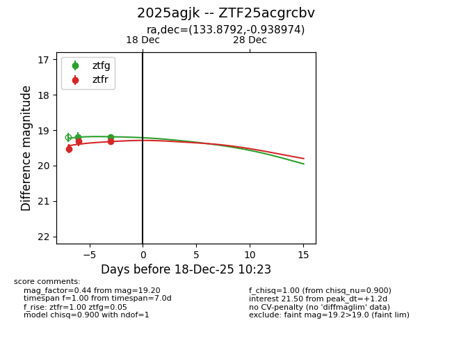
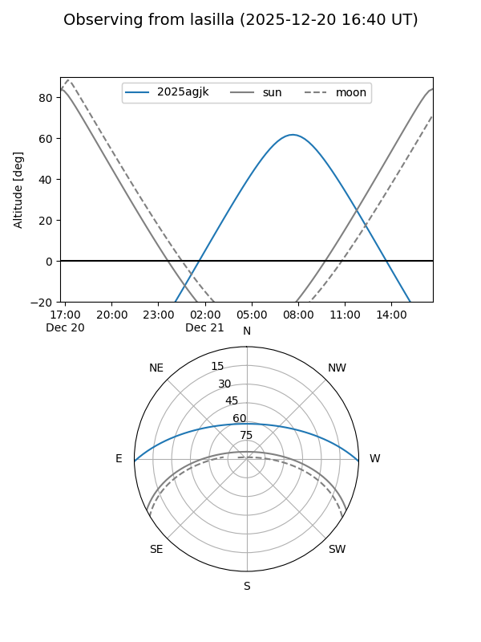
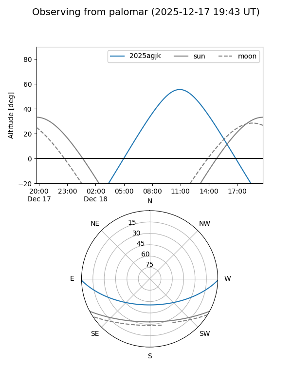
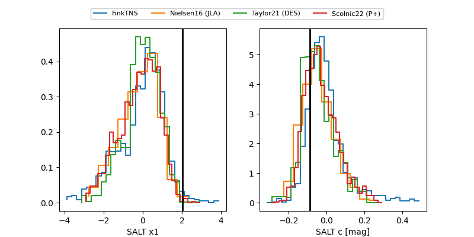

2025agjk
Target 2025agjk at 2025-12-20 10:59
Aliases and brokers:
FINK: fink-portal.org/ZTF25acgrcbv
Lasair: lasair-ztf.lsst.ac.uk/objects/ZTF25acgrcbv
ALeRCE: alerce.online/object/ZTF25acgrcbv
TNS: wis-tns.org/object/2025agjk
YSE: ziggy.ucolick.org/yse/transient_detail/2025agjk
alt names
ZTF25acgrcbv (ztf,fink_ztf)
2025agjk (tns,yse)
Coordinates:
equatorial (ra, dec) = 133.8792,-0.93897
equatorial (HMS+DMS) = 08:55:31.02,-00:56:20.31
galactic (l, b) = (229.1684,+26.81472)
Flags:
Photometry:
last ztfg=19.20, ztfr=19.31
2 ztfg, 4 ztfr detections
Lightcurve

Visibility


Additional plots
